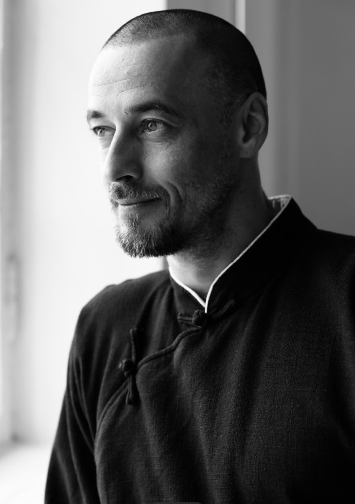
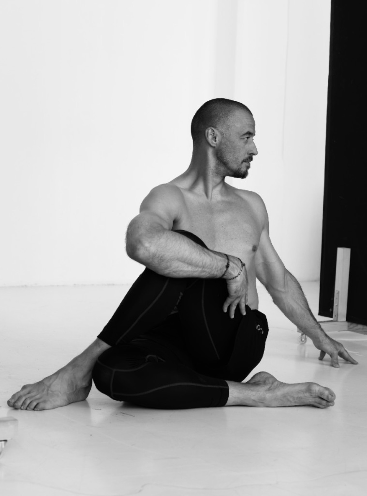
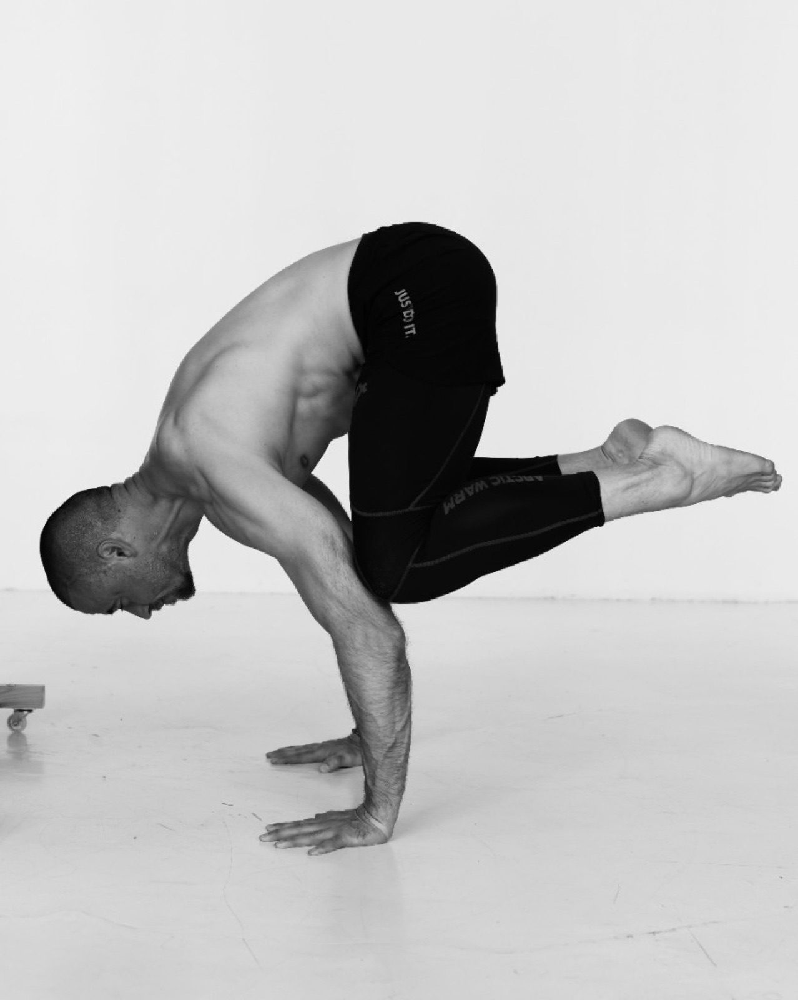
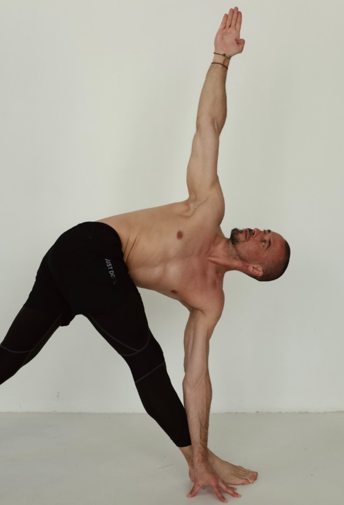
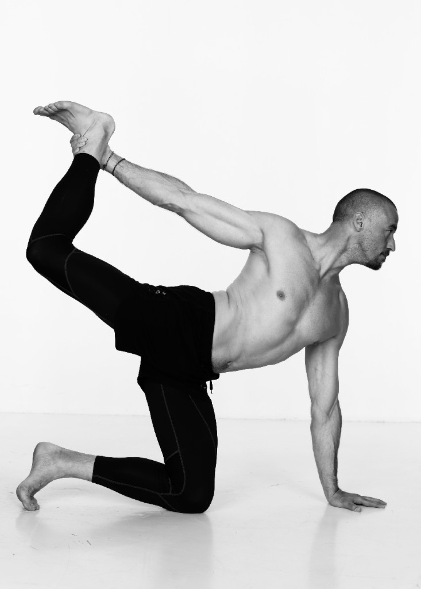
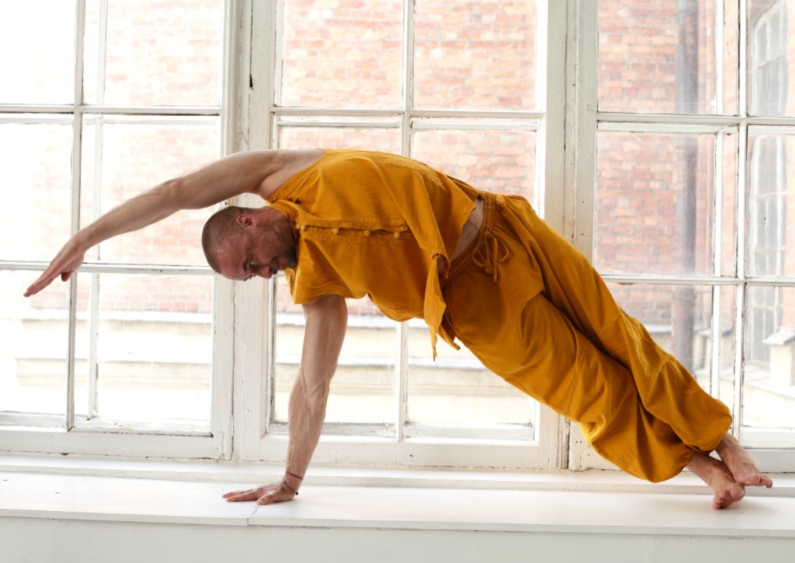
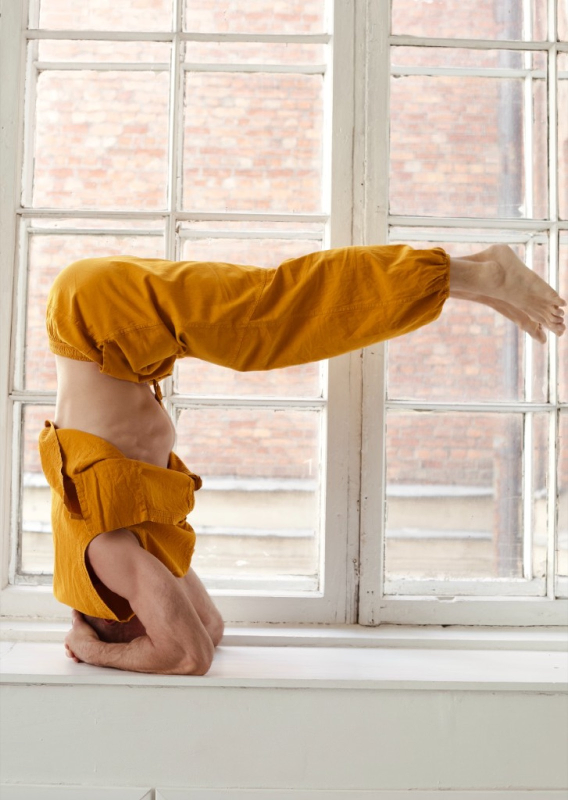

i. Базовый
Онлайн
79 000 ₽
- Доступ 2 месяца
- Все материалы курса
- Без чата и обратной связи

(Авторский курс Ильи Баринова · 2026)
Йога для начинающих и практикующих. Знания и навыки, позволяющие безопасно и глубоко погрузиться в практику йоги. Разобраться, как она работает и как может изменить жизнь.
(Слово автора)
Илья — о курсе: как адаптировать практику под себя и встроить её в обычную жизнь, чтобы росло её качество.
Успех вашей практики определяется не успехом на коврике, а качеством изменения жизни.— Точка опоры
(Аудитория)
И для тех, кто хочет войти в практику грамотно, и для тех, кто уже занимается, но хочет, чтобы практика наконец давала результат и работала в жизни.
Если вы начинаете с нуля
Если вы уже практикуете
(Контекст)
Многие занимаются месяцами и упираются в одно и то же: повторяют движения, но не видят результата и не понимают, каким он должен быть.
Что именно происходит во время выполнения асаны, как это отражается на теле, уме, сознании. Как физические упражнения позволяют менять модель поведения, менять коммуникацию с миром.
Поэтому фокус курса не только на том, как правильно выполнять практику, но и на том, зачем она нужна и как будет проявляться — в теле, состояниях, действиях, поведении.
(Опора)
Вместе они дают понимание индивидуального и безопасного выполнения практики йоги, результаты которой будут мягко интегрироваться в жизнь.
Базовые асаны и принципы безопасности. Как заниматься без вреда для спины, шеи, суставов и дыхания. Как видеть опору, ось и амплитуду, как чувствовать опору и находить своё индивидуальное выполнение асаны под своё тело — чувствуя тело, понимая условия необходимости и достаточности. А не стремление «скрутиться / прогнуться / наклониться поглубже».
Дыхательные техники и основы медитации как связующий мостик между физической практикой асан и навыками управления своими эмоциями и состояниями. Развитие тонкой саморегуляции позволит улучшить качество социальных взаимоотношений, поменяет восприятие мира.
Знания и навыки, приобретённые на курсе, при регулярной практике выстроятся в нейронные связи, адаптируются под жизненные ситуации, встроятся в повседневность. Путь от изменения тела в асанах — к изменению восприятия и способа мышления в повседневной жизни.





(Запросы)
Типичные формулировки тех, кто оставляет заявку. Узнаёте себя — курс собран в том числе для вас.
(Программа)
Формат воркшопа — темы ведутся параллельно и раскрываются по мере задач группы.
Пять основных тем переплетены в обучении и раскрываются по мере задач группы. Шестая — итоговый ретрит, который собирает всё вместе.
Ретрит — финальный аккорд в структуре курса. Поле преподавателя — это всегда мощное вовлечение в глубину практики. Возможность живьём пройти по всему материалу и сделать финальные отстройки — как идеальная настройка музыкального инструмента, звучащего в унисон со Вселенной. Приобретённые навык и опыт станут помощниками в дальнейшей самостоятельной практике.
Это не архив уроков и не разовый интенсив. Шаг за шагом человек выстраивает опору в теле, состоянии и повседневной жизни — и её качество растёт.
(Результат)
Главный итог — не набор упражнений, а более ясное понимание практики и собственного тела.
Первые изменения большинство участников замечают в первые 2–3 недели практики.
(Формат)

30 занятий. Формат воркшопа — занятия, на которых мы разбираем определённую тему, асану, дыхательное упражнение и тут же отрабатываем и включаем её в практику. Формат позволяет свободно работать с материалом в режиме вопросов и ответов — прямого диалога учителя с учениками. Беседа, в рамках которой теоретический материал усваивается на практике.
Планируются небольшие домашние задания для успешного усвоения материала.
Тело · Состояние · Жизнь
(Автор)
(Отзывы)
Курс стартует первым потоком — отзывы участников появятся здесь после старта.
Отзывы о практике с Ильёй можно посмотреть на сайте школы — barinovdao.ru.
(Участие)
Промокоды появятся позже.
i. Базовый
79 000 ₽
ii. Проф
99 000 ₽
iii. Комбо
119 000 ₽
Два курса в одном
iv. VIP
199 000 ₽
Оплата российскими и зарубежными картами. Рассрочка 3–12 мес.
(Вопросы)
Да. Курс рассчитан в том числе на тех, кто только начинает и хочет войти в практику спокойно и грамотно.
Да. Курс подойдёт тем, кто уже занимается, но хочет, чтобы практика работала и давала результат в жизни, и получить более ясное понимание практики.
Нет. Курс помогает начать с текущего состояния тела и постепенно развивать подвижность без перегруза.
Курс строится с вниманием к безопасности. При выраженных ограничениях важно учитывать индивидуальные особенности и при необходимости ориентироваться на рекомендации врача.
Да, записи занятий будут доступны участникам. Сроки доступа зависят от тарифа — подробности пришлём после заявки.
Да. Основная часть курса проходит онлайн. Условия участия в ретрите можно обсудить отдельно.
Курс рассчитан на регулярное участие в течение трёх месяцев. Точный ритм занятий будет сообщён перед стартом.
(Заявка)
Если вы давно хотели начать заниматься йогой — или уже практикуете, но хотите, чтобы практика стала опорой в вашей жизни, — этот курс даст вам понятную базу и навыки, которые вы адаптируете под себя. Без спешки. Без лишней эзотерики. Без механического повторения формы.
Ранняя цена действует до 1 августа.
Мы свяжемся с вами и пришлём подробности курса. Срочно — Telegram.